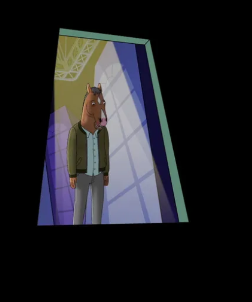

THE VIEW FROM HALFWAY DOWN
the weak breeze whispers nothing
the water screams sublime
his feet shift, teeter-totter
deep breath, stand back, it's time
toes untouch the overpass
soon he's water bound
eyes locked shut but peek to see
the view from halfway down
a little wind, a summer sun
a river rich and regal
a flood of fond endorphins
brings a calm that knows no equal
your're flying now
you see things much more clear
than from the ground
it's all okay, or it would be...
were you not now halfway down
thrash to break from gravity
what now could slow the drop
all i'd give for toes to touch the safety back at top
but this is it.
the deed is done, silence drowns the sound
before i leaped i should've seen
the view from halway down
i really should've thought about
the view from halway down
i wish i could've known about
. . .
